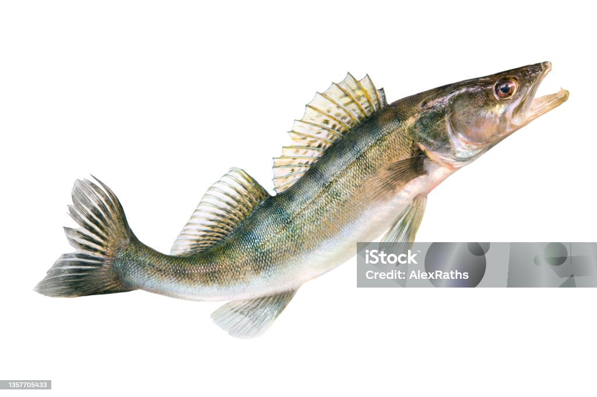

Fishy Time
The not very complete comprehensive guide to the basics of fishing in Manitoba.
Index
Fishy Time

Species
Possession limits
Size restrictions
Technique to Catch
Walleye (Pickerel) or Sauger
4
none may exceed 55cm
Trolling and Jigging
Northern Pike (Jackfish)
4
none may exceed 75cm
Spinning and Jigging
Yellow Perch
25
N/A
Vertical Jigging
Favourite Fish
Walleye
Northern Pike
Yellow Perch